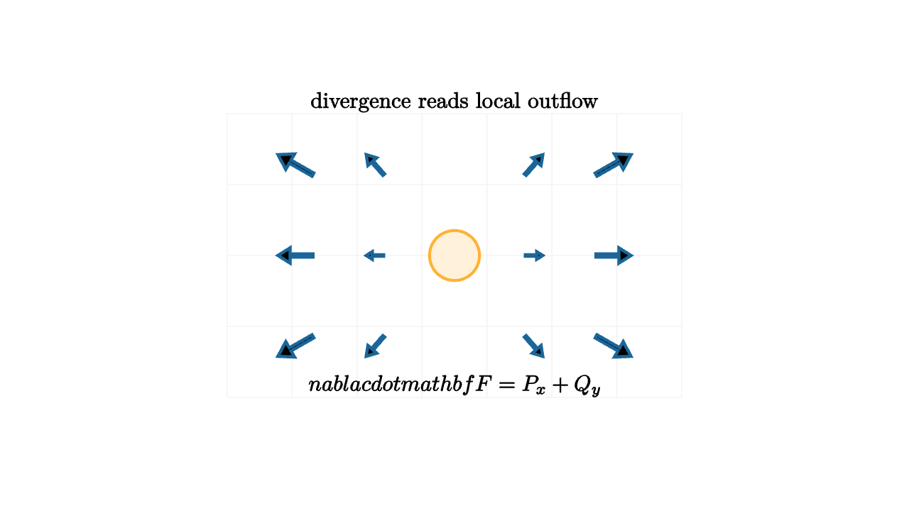

Divergence Measures Source Strength
Picture a small square of floating leaves on a pond. If the water pushes more leaves out of the square than it brings in, the square acts like it contains a source. If more leaves enter than leave, it acts like a sink. If the traffic balances, the square may still be moving or swirling, yet its local amount of outflow is zero.
Divergence is the calculus version of that comparison. It measures the net outward flow per tiny area around a point.
For a two-dimensional vector field
the divergence is
The first term asks how the horizontal component changes as you move horizontally. The second asks how the vertical component changes as you move vertically. Together they compare exit flow against entry flow in the two coordinate directions.

source
let soft = |col, amount| lerp(WHITE, col, amount)
let ArrowAt = |p, s, col| stroke{col, 2.6} Arrow(p - s * p, p + s * p)
mesh diagram = [
stroke{soft(LIGHT_GRAY, 0.15), 1} LineGrid([-2.0, 2.0, 8], [-1.25, 1.25, 5], 1),
ArrowAt([-1.4, -0.8, 0], 0.11, BLUE),
ArrowAt([-0.7, -0.8, 0], 0.11, BLUE),
ArrowAt([0.7, -0.8, 0], 0.11, BLUE),
ArrowAt([1.4, -0.8, 0], 0.11, BLUE),
ArrowAt([-1.4, 0, 0], 0.11, BLUE),
ArrowAt([-0.7, 0, 0], 0.11, BLUE),
ArrowAt([0.7, 0, 0], 0.11, BLUE),
ArrowAt([1.4, 0, 0], 0.11, BLUE),
ArrowAt([-1.4, 0.8, 0], 0.11, BLUE),
ArrowAt([-0.7, 0.8, 0], 0.11, BLUE),
ArrowAt([0.7, 0.8, 0], 0.11, BLUE),
ArrowAt([1.4, 0.8, 0], 0.11, BLUE),
center{0r} fill{soft(ORANGE, 0.18)} stroke{ORANGE, 2.4} Circle(0.22),
center{1.35u} Text("divergence reads local outflow", 0.70),
center{1.15d} Tex("\\nabla\\cdot \\mathbf F=P_x+Q_y", 0.70)
]A clean example is the radial field
Arrows point away from the origin, and their lengths grow with distance. The divergence is
Every tiny square sees more flow leaving through its far sides than entering through its near sides. The field behaves like a uniform source density throughout the plane.
Now compare
This field rotates around the origin. Its divergence is
The arrows can make leaves spin, but a tiny square does not gain or lose leaves from net expansion. Spin belongs to curl, which comes next. Divergence cares about sources and sinks.
source
let soft = |col, amount| lerp(WHITE, col, amount)
let ArrowAt = |p, s, col| stroke{col, 2.5} Arrow(p - s * p, p + s * p)
let SourceField = |s, col| [
ArrowAt([-1.4, -0.8, 0], s, col), ArrowAt([-0.7, -0.8, 0], s, col), ArrowAt([0.7, -0.8, 0], s, col), ArrowAt([1.4, -0.8, 0], s, col),
ArrowAt([-1.4, 0, 0], s, col), ArrowAt([-0.7, 0, 0], s, col), ArrowAt([0.7, 0, 0], s, col), ArrowAt([1.4, 0, 0], s, col),
ArrowAt([-1.4, 0.8, 0], s, col), ArrowAt([-0.7, 0.8, 0], s, col), ArrowAt([0.7, 0.8, 0], s, col), ArrowAt([1.4, 0.8, 0], s, col)
]
let SinkField = |s, col| [
ArrowAt([-1.4, -0.8, 0], -s, col), ArrowAt([-0.7, -0.8, 0], -s, col), ArrowAt([0.7, -0.8, 0], -s, col), ArrowAt([1.4, -0.8, 0], -s, col),
ArrowAt([-1.4, 0, 0], -s, col), ArrowAt([-0.7, 0, 0], -s, col), ArrowAt([0.7, 0, 0], -s, col), ArrowAt([1.4, 0, 0], -s, col),
ArrowAt([-1.4, 0.8, 0], -s, col), ArrowAt([-0.7, 0.8, 0], -s, col), ArrowAt([0.7, 0.8, 0], -s, col), ArrowAt([1.4, 0.8, 0], -s, col)
]
"Source"
mesh field = [
stroke{soft(LIGHT_GRAY, 0.15), 1} LineGrid([-2.0, 2.0, 8], [-1.25, 1.25, 5], 1),
SourceField(0.11, BLUE),
center{1.35u} Text("positive divergence: net outflow", 0.66)
]
play Fade(0.8)
"Sink"
field = [
stroke{soft(LIGHT_GRAY, 0.15), 1} LineGrid([-2.0, 2.0, 8], [-1.25, 1.25, 5], 1),
SinkField(0.11, ORANGE),
center{1.35u} Text("negative divergence: net inflow", 0.66)
]
play Trans(1.0)
"Balance"
field = [
stroke{soft(LIGHT_GRAY, 0.15), 1} LineGrid([-2.0, 2.0, 8], [-1.25, 1.25, 5], 1),
stroke{GREEN, 2.5} Arrow(1.0l + 0.7d, 0.55l + 0.7d),
stroke{GREEN, 2.5} Arrow(0.55r + 0.7d, 1.0r + 0.7d),
stroke{GREEN, 2.5} Arrow(1.0l + 0.1d, 0.55l + 0.1d),
stroke{GREEN, 2.5} Arrow(0.55r + 0.1d, 1.0r + 0.1d),
stroke{GREEN, 2.5} Arrow(1.0l + 0.5u, 0.55l + 0.5u),
stroke{GREEN, 2.5} Arrow(0.55r + 0.5u, 1.0r + 0.5u),
center{1.35u} Text("balanced exits give div F = 0", 0.66)
]
play Trans(1.0)Divergence is also the local form of a global statement. The flux through a closed curve is the amount of field crossing outward through the boundary. A source inside increases outward flux; a sink decreases it. In higher dimensions the same idea becomes one of the central theorems of vector calculus.
For computation, keep the units in mind. If $\mathbf F$ measures fluid velocity, flux across a boundary has units of area per time in two dimensions or volume per time in three dimensions. Divergence divides that net flow by the tiny area or volume around the point, so it becomes source strength per unit area or volume.
This helps avoid a common mental slip. A large arrow does not automatically mean large divergence. A steady river can move quickly while carrying the same amount of water into and out of each small box. Divergence is about local spreading and compression, not speed alone.
The tiny box calculation
The formula $P_x+Q_y$ comes from a tiny rectangle. Give the rectangle width $\Delta x$ and height $\Delta y$. The right side contributes approximately
while the left side contributes inward flow approximately
The net horizontal outflow is therefore
Divide by the area $\Delta x\Delta y$, and the horizontal contribution tends to $P_x$. The vertical sides give $Q_y$ in the same way. This is the algebraic version of watching exits and entrances on the sides of a box.
In three dimensions, the same box has a third pair of faces:
for $\mathbf F=\langle P,Q,R\rangle$. A tiny cube compares outflow through right-left, back-front, and top-bottom faces. The vocabulary scales up without changing the core idea.
Conservation language
Divergence is a natural language for conservation laws. If a fluid is incompressible and has constant density, its velocity field satisfies
This says local volume is conserved. The fluid can bend, shear, and swirl, while every tiny box receives as much volume as it releases.
If a quantity has density $\rho$ and flux $\mathbf J$, a common conservation equation is
Read it in words: density increases when flux converges inward, and density decreases when flux spreads outward. The divergence term is the local accounting entry for flow across the boundary of a tiny region.
This is why divergence appears in electricity, heat flow, fluid mechanics, and probability. Electric charge creates electric field divergence. Heat flux divergence changes temperature. Probability current divergence changes probability density. The same operator records a source-and-sink question across many subjects.
When you see $\nabla\cdot\mathbf F$, read it as a question: is nearby flow being born, disappearing, or balancing? That question connects algebraic partial derivatives to the physical picture of sources, sinks, and conservation.